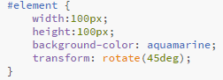
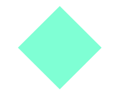
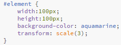
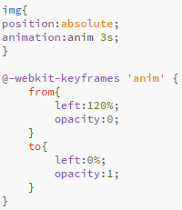
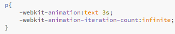

O animacjach
Animacje są dodatkowym elemenetem na stronie, który jest w stanie w bardzo ciekawy sposób urozmaicić jej wygląd i interaktywność. Na początku przyjrzymy się w jaki sposób obracać i zmieniać skale elementów, a następnie zobaczymy jak do tego dodać ruch.
Zatosujmy transformacje!
Każdemu elementowi na stronie możemy przypisać w arkuszach stylów selektor transform.Jak sama nazwa wsakuje będzie on powodował jakąś zmianę danego elementu w pewien określony sposób. Wartości jakie borze przyjmowac ten selektor to:
transform:rotate(...deg);
Selektor o wartości rotate powoduje, że dany element obróci się o kąt podany w nawiasach z przyrostkiem deg.
 transform:scale(scale);
W tym wypadku zostanie zmieniona skala naszego elementu w zależności od wartości umieszczonej w nawiasach. I tak wartość 2 zwiększy nam elememt dwukrotnie, 0.5 dwukrotnie zminejszy, a 1 pozostawi bez zmian.
Możemy również zapisać scale w postaci scaleX(scale); lub scaleY(scale); dla zmienienia jedynie po jednej z tych współrzędnych.
Obie wartości mozemy zapisać również tuż po spobie następująco: transform:rotate(...deg) scale(scale);.
transform:skew(...deg, ...deg);
Może oczywyście występowac w wersjach gdzie:
- skew(...deg, ...deg) - przechylenie elementu w lewo⁄prawo oraz w górę⁄dół
- skewX(...deg) - przechylenie elementu w lewo⁄prawo
- skewY(...deg) - przechylenie elementu w górę⁄dół
transform:translate(...px, ...px);
Przesunięcie elemetu względem osi X i Y lub też osobno w zapisie translateX(...px); ⁄ translateY(...px);
Co będzie potrzebne do stworzenia ruchomej animacji?
Aby stworzyć ruchomą animację potrebujemy przejść przez 2 istotne kroki:
- Definicja animacji
- Zastosowanie animacji do konkretnego elementu
Zobaczmy więc pokolei.
@keyframes
Keyframes rozpoczynamy od znaku małpy, następnie umieszczamy odpowiednie przedrostki dla różnych przeglądarek i samo słowo "keyframes". Po znaku spacji zapisujemy nazwę animacji, a w wąsach całą jej treść.
Treścią może być np powyższe from oraz to (również z zawartością zapisaną w wąsach) lub odpowiadające temu własności procentowe. From określa stan początkowy animowanego elementu, a to jego stan końcowy. Dla tego określenie wartości procentowej (np 50%) opisze nam zachowanie elementu w samym środku animacji.
Left spowoduje przesunięcie się z prawej strony w lewą elementu, natomiast opacity pojawienie się go.
Przypisanie animacji do elementu
Na początku należy pamiętać, aby na elemencie animowanym ustawić position:absolute!
Odbywa się poprzez przypisanie selektora animation: z nazwą wcześniej utwożonej animacji i czasu jej trwania w sekundach.
Do animation możemy również przypisać dodatkowe wartości ją określającje:
animation:name | time | timing-function | delay | iteration-count | direction;
Znaczenia kolejnych wartości:
| Wartość | Znaczenie |
| timing-function | Jest to rozkład czasowy definiujący zachowanie się animacji na jej początku lub końcu
|
| delay | To opóźnienie całej animacji (poklatkowo). Zapisujemy go za pomocą steps(...) gdzie wpisujemy na ile klatek ma być animacja podzielona |
| iteration-count | Liczba powtórzeń animacji. Zapisujemy ją jako wartość liczbową lub jako infinite, gdy chcemy aby wykonywała się w niekończoność. |
| direction | Jest to "kierunek" wykonania się animacji:
|
Oczywiście wszystkie wartości możemy zapisać w postaci np:
Jedynie time jest dla nas wyjątkiem i zapisujemy go jako animation-duration:.